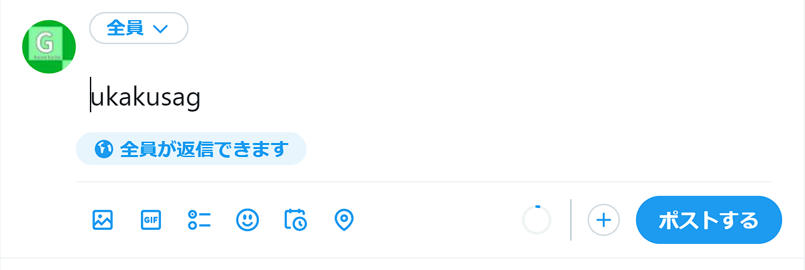
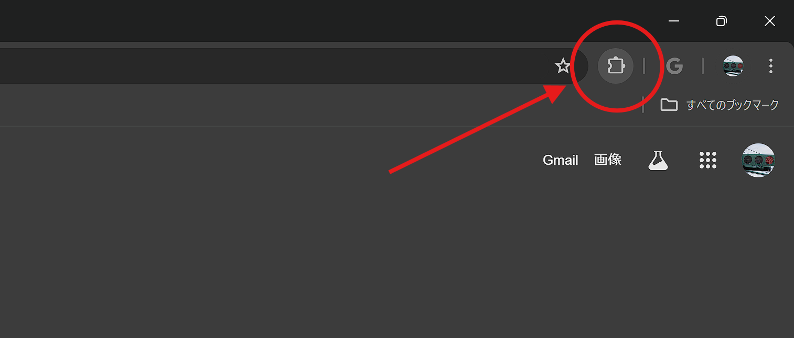
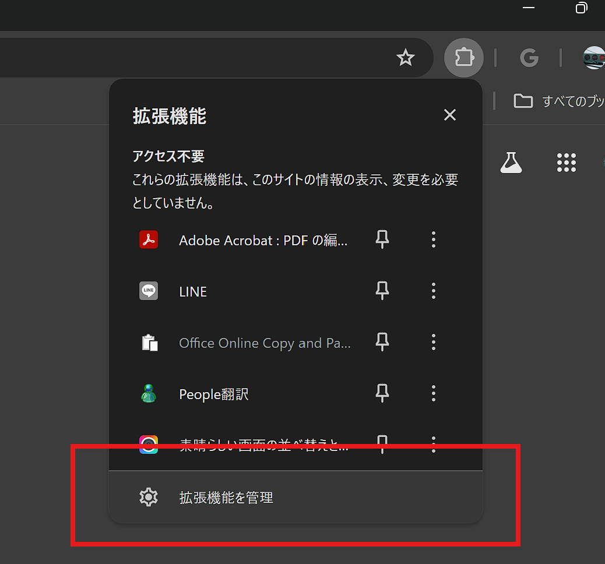
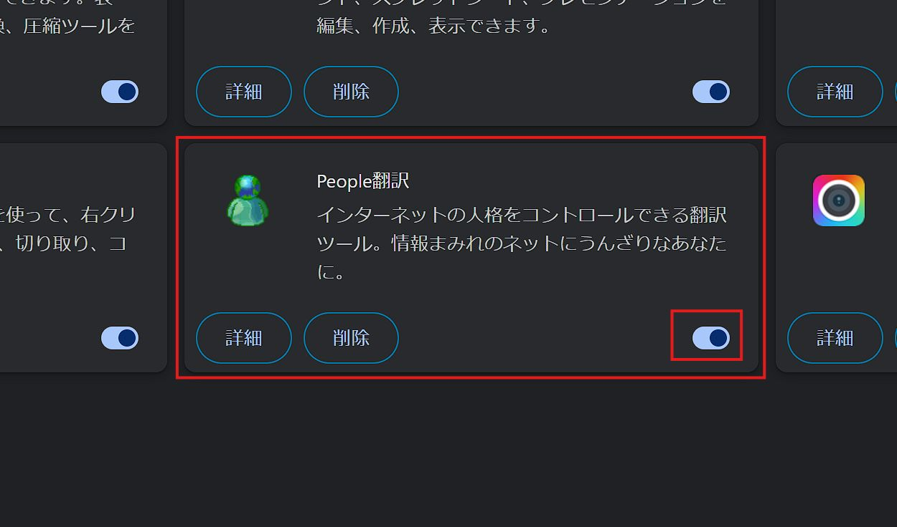

edit_noteノート
2024年6月2日
【バグ対処法】突然多くの人のPCで起きた入力バグ。その原因は意外なものだった！
はじめに
今回は、Twitter（X）などで多数報告されている文字カーソルが勝手に動いてまともに文字入力ができないバグについて、原因が判明したため対処法と合わせて解説していきます。
バグの症状
今回報告されているバグは、ブラウザ上で文字入力を扱うサイト(主にXやInstagramなどのSNS)で文字入力をすると、勝手に文字カーソルが左寄せされてしまい、うまく文字が打てないという現象です。

実際、サイト管理者のPCでもその現象が発生し、ものすごく困っていました。
原因はPeople翻訳
People翻訳が入っている場合はこうなることがあります
— ⿻海桜𝕏(サンゴ)⿴ (@Diary_of_Sango) June 1, 2024
私の場合はTwitterではなりませんでしたがDeepLやDiscordで同様の問題があったため削除しました
今回のバグの原因となったのは、まさかのPeople翻訳でした。具体的な原因はまだわかっていませんが、おそらく文字を書き換えるためにページを読み取る際に入力中の文字まで読み取ろうとしてしまっているのだと思います。
People翻訳is何？
People翻訳とは、約1年前にネットで流行した、”「インターネットのすべてを最悪にする」”いわゆる面白系のChrome拡張機能です。
【知りたくない情報まで勝手に飛び込んでくる昨今のインターネットにどうぞ】
— もにゃ (@Monyaizumi) June 16, 2023
インターネットの"すべて"を最悪にするChrome拡張『People翻訳』をリリースしましたhttps://t.co/xZclqNYDMC
魑魅魍魎の人格を正規表現化したので、あらゆる文の「情報性」を薄めます
まともに読む気力がかなり失せる。… pic.twitter.com/3sHbtB6LDl
対処法
今のところできるのは拡張機能の無効化
具体的な原因がわからないため、とりあえずは一旦拡張機能を無効化し、使うときのみ有効化しましょう。
無効化の手順
※Chromeで解説します。1.右上の「拡張機能マーク」をクリック

2.「拡張機能を管理」をクリック

3.「People翻訳」の欄のスイッチをオフ

以上で無効化は完了です。お疲れさまでした。
まとめ
ちょっと前からこのバグがいろいろなところで発生していて、ブラウザ側が原因だと思っていましたが、まさかのPeople翻訳が原因でした。People翻訳はすごく面白い拡張機能なので、一刻も早く修正されることを祈ります。（急な個人の感想）